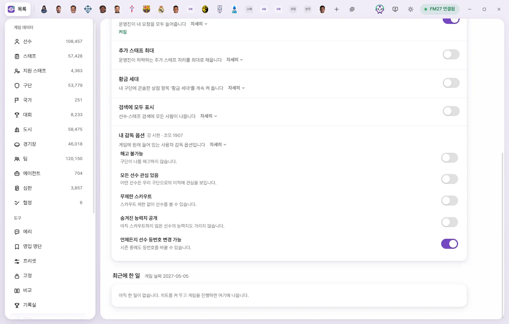
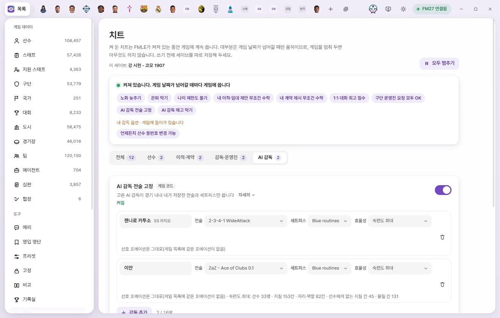

도구
치트
치트는 켜 두면 FMLE가 켜져 있는 동안 게임에 계속 적용하는 규칙입니다. 성장 가속, 노화 늦추기, 은퇴 막기, 제안 무조건 수락, AI 감독 해고 막기, AI 감독 전술 고정 등이 있고, 세이브마다 따로 기억합니다.

치트란
치트는 한 번 쓰고 끝나는 편집이 아니라 켜 두는 규칙입니다.
- FMLE가 켜져 있는 동안 게임에 계속 씁니다. FMLE를 끄면 멈춥니다.
- 대부분은 게임 날짜가 넘어갈 때만 움직입니다. 게임을 멈춰 두면 아무것도 하지 않습니다.
- '저장'을 누를 필요가 없습니다. 켜면 바로 적용 대상이 됩니다.
- 왼쪽 도구 목록의 치트를 누르면 열립니다. 치트가 돌고 있으면 그 옆에 켜진 개수가 나옵니다.
화면 둘러보기
위쪽
- 이 세이브: 이름 — 지금 목록이 어느 세이브의 것인지입니다(세이브마다 따로).
- 모두 멈추기 / 켜기 — 켠 치트가 하나라도 있으면 오른쪽 위에 나옵니다. '모두 멈추기'는 목록과 스위치는 그대로 두고 게임에 쓰는 것만 멈춥니다. '켜기'로 다시 돌립니다.
상태 상자
맨 위 글이 지금 상태입니다.
| 상태 | 뜻 |
|---|---|
| 켠 치트가 없습니다 | 아무 치트도 켜지 않았습니다 |
| 켜져 있습니다. 게임 날짜가 넘어갈 때마다 게임에 씁니다 | 정상으로 돌고 있습니다 |
| 멈춰 있습니다. 게임에 아무것도 쓰지 않습니다 | '모두 멈추기'를 눌렀습니다 |
| 세이브를 불러오면 시작합니다 | 게임은 켜져 있지만 세이브가 아직 없습니다 |
| 시작하는 중입니다 | 켜는 중입니다 |
| 게임을 기다리는 중입니다 (…) | 게임에 연결되지 않았거나 준비 중입니다. 괄호 안이 이유입니다 |
| 끄기 요청을 처리하는 중입니다. 게임 코드가 원래대로 돌아왔는지 확인해 주세요 | '게임 코드' 치트를 껐는데 아직 원래 코드로 돌리는 중입니다 |
그 아래에는:
- 켜진 치트 이름들 — 누르면 그 치트 줄로 갑니다(다른 묶음 탭이면 탭도 바뀝니다).
- 내 감독 옵션 · 게임에 들어가 있습니다 — 켜 둔 내 감독 옵션이 따로 한 줄에 나옵니다.
- 경고 목록 — 무언가 안 된 치트가 이름과 이유와 함께 나옵니다. 껐지만 아직 게임 코드가 남아 있는 치트도 여기 나옵니다.
묶음 탭과 치트 줄
전체 · 선수 · 이적·계약 · 감독·운영진 · AI 감독 탭으로 묶음을 골라 봅니다. 탭 옆 숫자는 켠 개수입니다. 고른 탭은 다음에 열 때도 그대로입니다.
치트 한 줄은 이렇게 생겼습니다.
- 이름과, 게임 코드를 바꾸는 치트에는 '게임 코드' 꼬리표.
- 한 줄 설명과 '자세히'(누르면 긴 설명이 펼쳐집니다).
- 상태 줄 — 지금 하는 일(예: '늦춘 하락 0번 · 지금 대상 389명'). 초록은 잘 되는 중, 주황은 경고입니다.
- 오른쪽에 스위치 또는 '규칙 추가'·'사람 추가'·'팀 추가'·'감독 추가' 단추.
맨 아래 최근에 한 일에는 치트가 한 일이 최근 14개까지 나옵니다(최근에 한 일).
켜고 끄기
- 스위치를 켜거나 '규칙 추가' 등으로 규칙을 넣습니다.
- 치트가 멈춰 있었으면 스위치를 켜거나 규칙을 추가할 때 자동으로 켜집니다.
- '게임 코드' 꼬리표가 있는 치트는 처음 켤 때 '세이브를 백업해 두셨습니까?' 창이 한 번 뜹니다. 몇 곳의 게임 코드를 바꾸는지와 '끄거나 FMLE를 정상 종료하면 원래 코드로 돌아옵니다'가 적혀 있습니다. '백업했습니다'를 누르면 켜지고, 다음부터는 묻지 않습니다.
- 끄려면 스위치를 끄거나 규칙을 휴지통으로 뺍니다. 모두 한꺼번에 멈추려면 '모두 멈추기'를 누릅니다.
세이브마다 따로
치트 목록과 켜짐 상태는 세이브마다 따로 기억합니다.
- 게임에서 다른 세이브를 열면 그 세이브의 치트로 바뀝니다. 다른 세이브의 치트가 이 세이브에 쓰이지 않습니다.
- 게임에서 '다른 이름으로 저장'처럼 새 세이브가 생기면, 그 전 세이브의 치트를 이어받아 시작하고 그다음부터는 따로 기억합니다.
- FMLE를 다시 켜면 설정의 'FMLE를 다시 켜면 지난번 상태 그대로'(처음에 켜짐)에 따라, 끌 때 켜져 있던 치트가 다시 켜집니다. 게임에서 어떤 세이브를 열었는지 확인한 뒤 그 세이브의 것만 켭니다.
- 세이브를 아직 확인하지 못했으면 위쪽에 '마지막으로 연 세이브: … · 게임에서 다른 세이브를 열면 그 세이브의 것으로 바뀝니다'가 나옵니다.
'백업했습니다' 확인은 세이브와 상관없이 한 번만 묻습니다. 자세한 것은 세이브마다 따로 기억하는 것에 있습니다.
끄면 원래대로 돌아가나요
치트는 하는 방식에 따라 끈 뒤가 다릅니다.
| 종류 | 치트 | 끄면 |
|---|---|---|
| 게임 코드를 바꾸는 것 ('게임 코드' 꼬리표) | 제안 수락 세 가지, 내 선수 몸값 AI 구단처럼, 1:1 대화 최고 점수, 전술 효율성 최고, AI 감독 전술 고정, AI 감독 해고 막기, 나이 제한도 풀기 | 끄거나, 모두 멈추거나, FMLE를 닫으면 원래 코드로 돌립니다. 켜 둔 동안 일어난 일(성사된 이적·계약, 게임이 다시 계산해 저장한 몸값, 치른 경기 기록)은 남습니다 |
| 게임 설정을 켜 두는 것 | 구단 운영진 요청 모두 OK, 추가 스태프 최대, 황금 세대, 검색에 모두 표시 | 끄거나 모두 멈추면 FMLE가 켠 것(올린 자리)만 원래대로 돌립니다 |
| 값을 계속 쓰는 것 | 성장 가속, 노화 늦추기, 유소년 CA·PA, 은퇴 막기, 내 선수 기분 관리, 내 구단 선수 회복, 불만 자동 해결 | 그 뒤로 더 쓰지 않습니다. 이미 바꾼 값은 게임에 남습니다 |
| 값을 지키다 되돌리는 것 | 회장 인내심 최고 | 끄면 FMLE가 켜져 있는 동안 원래 인내심으로 돌려놓습니다 |
| 내 감독 옵션 | 해고 불가능 등 다섯 가지 | 치트가 아니라 게임 자체 옵션입니다. 누를 때 바로 쓰고 FMLE를 꺼도 그대로입니다. '모두 멈추기'와 상관없습니다 |
'게임 코드' 치트를 끈 뒤의 상태 줄:
- 끄기 요청 · 복원 대기 — 게임이 바빠서 원래 코드로 돌리는 것을 기다리는 중입니다. 잠시 뒤 사라집니다.
- 끄기 요청 · 복원 실패: … — 돌리지 못했습니다. 이유를 확인해 주세요.
FMLE 창을 닫을 때는 먼저 게임 코드를 원래대로 돌린 뒤 닫힙니다. 돌리지 못하면 FMLE가 닫히지 않고 '게임 규칙을 원래대로 돌리지 못해서 FMLE를 열어 두었습니다'라고 알립니다. FMLE가 정상 종료되지 않은 경우(강제 종료 등)에 어떻게 되는지는 아직 확인하지 않았습니다.
대상 고르기
성장 가속·노화 늦추기·유소년 CA·PA 규칙은 줄 왼쪽의 대상 단추로 누구에게 적용할지 고릅니다.
| 대상 | 뜻 |
|---|---|
| 모든 선수 | 게임의 모든 선수 |
| 구단 | 그 구단 선수. 내 구단이 맨 위에 '내 구단'으로 나옵니다 |
| 선수 한 명 | 그 선수 |
| 국가 | 그 나라 구단(그 나라 리그 체계에 있거나 그 나라에 있는 구단) 선수 |
| 리그 | 이번 시즌 1군이 그 리그에서 뛰는 구단의 선수 |
| 국적 | 그 나라 국적 선수 |
목록은 게임에 연결해서 읽은 뒤에 고를 수 있습니다.
선수
성장 가속
게임이 올린 현재 능력(CA)과 능력치에 배율을 곱해 더 올립니다. '규칙 추가'를 누르면 '모든 선수 ×2' 규칙이 생깁니다.
- 배율(×1~×10, 0.1 단위): ×2면 두 배 빠르게 오릅니다.
- 'CA·모든 능력치' 단추: 배율을 걸 값을 고릅니다. 고른 값에만 배율을 곱하고, 고르지 않은 값은 게임이 올린 만큼만 오릅니다. 묶음 제목 옆 '묶음 전체'로 묶음을 한 번에 고릅니다. 맨 위 'CA·모든 능력치'를 누르면 처음처럼 모든 값에 곱합니다. 숨은 능력치 다섯 가지(꾸준함, 더티 플레이, 중요 경기, 부상 빈도, 다재다능)는 고를 수 없습니다.
- 떨어지는 것도 막기: 게임이 내린 만큼을 되돌립니다.
CA는 잠재 능력(PA)을 넘지 않고, 능력치는 20을 넘지 않습니다. 한 선수에게 규칙이 여러 개면 가장 큰 배율을 씁니다. 상태 줄: '더 올린 횟수 N번 · 떨어짐 막음 N번 · 대상 N명'.
노화 늦추기
정한 나이부터 CA와 능력치가 덜 떨어져 선수 생활이 길어집니다. 규칙 한 줄: 대상 · N살부터(20~45) · 하락의 N%만(0~100) · CA 범위 · PA 범위. 처음 값은 30살, 30%, CA·PA 0~200입니다.
- 30%면 10 내릴 때 3만 내려갑니다. 0%면 떨어지지 않고, 100%면 게임 그대로입니다.
- 1이 안 되는 몫은 그 비율의 확률로 내립니다. 30%면 1 내릴 때 열 번에 세 번꼴로 1이 내려갑니다.
- CA·PA 범위를 좁히면 지금 그 범위 안에 있는 선수만 받습니다. CA가 떨어져 범위 아래로 내려가면 그때부터는 게임대로 떨어집니다.
- 한 선수에게 규칙이 여러 개면 가장 덜 떨어지는 규칙을 씁니다. 성장 가속의 '떨어지는 것도 막기'에도 걸린 선수는 아예 떨어지지 않습니다.
- 은퇴는 게임에 맡깁니다. 막으려면 '은퇴 막기'를 함께 쓰세요.
상태 줄: '늦춘 하락 N번 · 지금 대상 N명'.
유소년 CA·PA
새로 나온 유소년의 CA와 PA를 정한 범위로 맞춥니다. '규칙 추가'를 누르면 내 구단(모르면 모든 선수) 대상, CA 60~100, PA 150~190 규칙이 생깁니다(1~200).
- FMLE가 켜져 있을 때 새로 나온 유소년에게 적용합니다.
- 게임이 정한 값이 범위 밖이면 범위 안에서 골고루 나눠 정합니다. 이미 범위 안이면 그대로 둡니다.
- 능력치도 새 CA만큼 실제로 좋아지거나 낮아집니다(RCA, 추천 현재 능력).
- 원더키드를 켜면 CA를 범위의 최대값까지 올립니다. PA보다 높아지지는 않습니다.
- '선수 한 명' 규칙은 그 선수에게 지금 한 번 적용합니다.
- 한 유소년에게 규칙이 여러 개면 가장 좁은 대상(선수 한 명 → 구단 → 리그 → 국가·국적 → 모든 선수)의 규칙을 씁니다.
상태 줄: '맞춘 유소년 N명'.
은퇴 막기
고른 선수·스태프가 세운 은퇴 계획을 바로 지웁니다. 은퇴 예정 표시와 게임의 은퇴 예정 기록을 함께 지웁니다.
- '사람 추가'를 누릅니다.
- 게임에서 은퇴 예정인 사람이 먼저 '은퇴 예정 N명'으로 나옵니다(열 때마다 다시 읽습니다). 위쪽 칸에 이름을 넣으면 다른 선수·스태프도 찾을 수 있습니다.
- 사람을 누르면 목록에 들어갑니다. 이미 넣은 사람은 회색입니다.
목록 줄에는 이름, 구단, '날짜 은퇴 예정이었음'이 나오고, 열기(탭 열기)와 휴지통이 있습니다. 게임에서 찾지 못한 사람은 '게임에서 찾지 못함'이 붙습니다. 프리셋의 '은퇴 막기 목록에 넣기' 동작으로 여러 명을 한 번에 넣을 수도 있습니다(프리셋).
상태 줄: '은퇴 막음 N번'.
나이 제한도 풀기 ('게임 코드', 처음부터 켜짐): 나이가 많아도 AI 구단이 목록의 선수에게 이적·임대 제안을 하고, 스태프를 채용 후보로 봅니다.
- 게임에서는 AI 구단이 41세부터 관심과 이적 제안을, 37세부터 임대 제안을 하지 않습니다. 스태프도 오래 일한 경력이나 무직 기간, 76세 이상 같은 나이 기준으로 후보에서 빠지거나 점수가 깎입니다('자세히'에 나이가 모두 적혀 있습니다). 이 스위치를 켜 두면 목록의 사람은 이 나이 제한에 걸리지 않습니다.
- 내 구단 사람도 포함되므로, 제안이 오면 평소처럼 거절하면 됩니다.
- 21·23세 이하 리그 같은 대회의 나이 규칙은 그대로입니다.
- 선수·스태프 각각 128명까지입니다.
- 목록에 사람이 있고 치트가 켜져 있으면 처음 한 번 백업 확인이 뜹니다. '나이 제한은 그대로'를 누르면 이 스위치만 꺼집니다(은퇴 막기는 그대로).
상태 줄: '켜짐 · 선수 N명 · 스태프 N명 · 나이 제한을 넘긴 검토 N번(N명)', 확인 전이면 '세이브 백업을 확인하면 켜집니다'.
내 선수 기분 관리
내 구단 선수의 사기·만족도와 나에 대한 호감을 계속 최고로 유지합니다. 나를 좋아하는 마음은 가장 크게, 싫어하는 마음은 가장 작게 유지해서 대화와 불만이 잘 풀릴 가능성이 커집니다. 대화 점수 자체는 '1:1 대화 최고 점수'가 맡습니다. 상태 줄: 'N명 관리 중'.
내 구단 선수 회복
부상을 없애고, 컨디션·경기 감각은 100%, 피로는 최저로 계속 유지합니다. 1군만이 아니라 구단의 모든 팀 선수에게 적용합니다. 상태 줄: 'N명 관리 중 · 부상 없앤 횟수 N번'.
불만 자동 해결
내 구단과 맺은 계약에 생긴 불만을 그날로 끝냅니다. 불만 기록은 지우지 않고 끝난 날짜만 넣습니다. 다른 구단과 맺은 계약(다른 구단으로 간 임대 등)의 불만은 그대로 둡니다. 상태 줄: '끝낸 불만 N건'.
남자팀 자격 유지
여성으로 바꾼 선수가 남자 구단·남자 국가대표팀에서 계속 뛰게 합니다. 선수 화면의 정보 탭에서 성별을 여성으로 바꾸면 여기에 들어옵니다. 자세한 것은 성별 바꾸기에 있습니다.
이적·계약
네 가지 모두 '게임 코드' 치트입니다. 제안 수락 세 가지는 처음 켤 때 한 번만 함께 묻습니다(이미 성사한 이적·계약은 끈 뒤에도 그대로 남습니다).
내 이적·임대 제안 무조건 수락
내가 낸 이적·임대 제안을 상대 구단이 받아들입니다. 선수를 데려올 때와 보낼 때 모두 적용하고, 선수 제안하기와 역제안도 포함합니다.
상태 줄에 '제안 출처 N건을 놓쳤습니다. 그 제안은 다시 내야 적용됩니다'가 나오면, 그 제안은 다시 내 주세요.
내 계약 제시 무조건 수락
내 감독이 제시한 계약을 선수가 받아들입니다. 재계약, 자유 계약, 이적 뒤 개인 조건을 포함합니다. 계약 시작일은 그대로입니다.
수락한 외부 이적의 선수 거부 무시
내가 받아들인 다른 구단의 이적 제의를 선수가 거부하지 않습니다(이적과 개인 조건 모두). 실제 이동일은 그대로입니다.
- 임대 제의도 포함: 위 기능을 켰을 때, 내가 받아들인 다른 구단의 임대 제의에도 적용합니다.
내 선수 몸값 AI 구단처럼
내 구단 선수의 몸값을 AI 구단 선수와 같은 방식으로 매깁니다. 게임은 소속 구단 감독이 사람이면 AI 구단에 붙는 웃돈(핵심 선수, 팔 필요 없음, 등록 규정, 시즌 중 판매 거부)을 빼고, 출전 지위를 계약서의 약속으로 보고, 구단 재정 보정을 건너뜁니다. 이 기능을 켜면 AI 구단과 같은 답을 받습니다.
- 그래서 몸값이 오르기도 하고 내리기도 합니다.
- 화면의 몸값과 AI 구단이 내는 제안 금액은 같은 계산을 씁니다.
- 게임이 저장해 둔 몸값은 게임이 다시 계산할 때 바뀝니다.
- 내가 요구 금액을 정한 선수는 AI 제안이 그 금액을 먼저 씁니다.
- 내가 다른 구단 선수를 살 때의 값은 그대로입니다.
상태 줄: '켜짐 · AI 구단처럼 계산 N번'. 게임에 이미 같은 일을 하는 다른 모드가 깔려 있으면 '게임에 깔린 다른 모드(FM27 AI Value)가 이미 켜 두었습니다 · FMLE는 손대지 않습니다'가 나옵니다. 이때는 그 모드가 하는 그대로이고 FMLE는 게임 코드를 바꾸지 않습니다.
감독·운영진


1:1 대화 최고 점수
'게임 코드'. 내 감독과 선수의 1:1 대화에서 게임이 선수 반응을 정하는 점수를 최고(10000)로 줍니다. 팀 대화, 기자회견, 여러 명과 하는 대화, AI 감독의 대화는 그대로입니다. 주제와 선택지마다 보정이 더 있어서 모든 선택지가 꼭 좋게 끝난다고 할 수는 없습니다.
전술 효율성 최고
'게임 코드'. 내 감독이 맡은 팀(구단 1군과, 맡고 있으면 국가대표팀)의 전술 효율성(전술 이해도·선수 지지·선수 능력)을 화면과 경기 모두 계속 100%로 유지합니다.
- 전술 화면과 선수 프로필의 값, 선발, 경기 엔진이 같은 값을 씁니다. 경기 중에 전술을 바꿔도 최고입니다.
- 선수의 능력치·숙련도·관계는 바꾸지 않습니다. 그래서 끄면 다음 계산부터 원래 값으로 돌아옵니다.
- 이미 치른 경기와 저장된 경기 기록에는 그때 값이 남습니다.
- 내 팀 기준으로 평가하는 영입 후보(충분히 스카우트한 선수)도 100%로 보입니다. 다른 팀과 AI 감독은 그대로입니다.
- 이미 열려 있는 게임 화면은 다시 열어야 바뀐 값이 보일 수 있습니다.
상태 줄: '켜짐 · 내 팀 N개 · 선수 평가 N번 · 경기 중 N번 최고로 채움'.
구단 운영진 요청 모두 OK
운영진이 내 요청을 모두 들어줍니다. 게임에 원래 들어 있는 '운영진 무시' 기능(콘솔판 상점 항목)을 계속 켜 둡니다. 게임은 요청 하나를 처리할 때마다 이 기능을 끄는데, FMLE가 곧바로 다시 켭니다. 이 치트는 날짜가 넘어가지 않아도 계속 확인합니다. 상태 줄: '켜짐 · 다시 켠 횟수 N번'.
추가 스태프 최대
운영진이 허락하는 추가 스태프 자리를 최대로 채웁니다: 코치·피지오 10명, 스포츠 과학자·퍼포먼스 분석관 5명(1군·U23·U19 각각), 스카우트 15명, 리크루트 분석관 5명. 이미 그만큼이면 그대로 둡니다. 상태 줄: '최대로 맞췄습니다'.
황금 세대
내 구단에 콘솔판 상점 항목 '황금 세대'를 계속 켜 둡니다. 게임은 유소년을 만들 때 이 설정을 읽고 끄는데, FMLE가 날마다 다시 켭니다.
검색에 모두 표시
선수·스태프 검색에 모든 사람이 나옵니다(콘솔판 상점 항목). 게임은 이 설정을 세이브에 저장하고 불러올 때 읽습니다. 그래서 켠 뒤 세이브를 저장하고 다시 불러와야 적용됩니다. 상태 줄: '켜짐 · 세이브를 저장하고 다시 불러오면 보입니다'.
내 감독 옵션
게임에 원래 들어 있는 사용자 감독 옵션입니다. 제목 옆에 '내 감독 이름 · 구단(또는 무직)'이 나옵니다.
| 옵션 | 하는 일 |
|---|---|
| 해고 불가능 | 구단이 나를 해고하지 않습니다 |
| 모든 선수 관심 있음 | 어떤 선수든 우리 구단으로의 이적에 관심을 보입니다 |
| 무제한 스카우트 | 스카우트 제한 없이 선수를 볼 수 있습니다 |
| 숨겨진 능력치 공개 | 아직 스카우트하지 않은 선수의 능력치도 가리지 않습니다 |
| 언제든지 선수 등번호 변경 가능 | 시즌 중에도 등번호를 바꿀 수 있습니다 |
- 사람 감독이 여러 명인 게임이면 '내 감독 고르기'로 먼저 고릅니다. 고른 뒤에는 '다른 사람 감독으로'로 바꿀 수 있습니다.
- '게임에서 내 감독을 찾지 못했습니다'가 나오면 '다시 읽기'를 누르세요.
- '해고 불가능'은 내 감독 탭 ⚡ 메뉴의 '해고 불가능 켜기·끄기'와 같은 값입니다.
AI 감독


AI 감독 전술 고정
'게임 코드'(16곳). 고른 AI 감독이 경기 내내 내가 저장한 전술과 세트피스만 씁니다.
- 스위치를 켭니다.
- '감독 추가'를 누르고 스태프를 이름·구단 이름·고유번호로 찾습니다. 1군 감독이 먼저, 다른 팀 감독, 그 밖의 스태프 순으로 나옵니다. 내 감독과 내 구단 스태프는 나오지 않습니다. 16명까지입니다.
- 줄마다 전술과 세트피스 파일을 고릅니다. 게임에 저장한 파일(문서 폴더의
Sports Interactive\Football Manager 27\tactics와set pieces)이 나옵니다. 새로 넣은 감독은 바로 위 감독의 파일(없으면 읽을 수 있는 첫 파일)로 시작합니다. - 효율성을 고릅니다.
- 숙련도 최대(처음 값): 그 감독 팀 선수들이 이미 가진 숙련도 칸 가운데 고른 전술의 칸(팀 지침 6가지, 자리·역할)을 최대로 유지합니다. 선수에게 아직 없는 칸은 새로 만들지 않습니다.
- 그대로: 게임에 맡깁니다.
- 훈련 전술로 등록 (준비 중): 아직 고를 수 없습니다.
하는 일:
- 두 국면의 포메이션과 역할, 모든 개인 지시(상대 선수 지시 포함)와 팀 지시가 고른 전술 파일 그대로입니다. 세트피스는 고른 세트피스 파일을 씁니다.
- 경기 중에도 AI가 전술을 바꾸지 못합니다. 교체는 AI가 평소대로 합니다.
- 감독 단위라서 다른 구단으로 옮겨도 따라갑니다. 코치 같은 다른 스태프도 고를 수 있고, 그 사람이 팀 감독을 맡는 때부터 적용됩니다.
- 감독 프로필의 선호 포메이션 두 칸(공 소유 시·미소유 시)도 고른 전술의 포메이션으로 맞춥니다. 게임 목록에 같은 포메이션이 없는 국면은 그대로 둡니다. 끄면 원래대로 돌립니다.
- 경기 준비가 시작될 때 넣으므로, 경기 도중에 켜면 다음 경기부터 적용됩니다.
- 사람 감독과 상대 팀, 다른 경기는 그대로입니다.
상태 줄: '감독을 고르면 시작합니다', '전술과 세트피스 파일을 고르면 시작합니다', '게임에 넣는 중', '켜짐 · 감독 N명 · 막은 AI 전술 변경 N번'.
감독 줄마다의 상태:
| 상태 | 뜻 |
|---|---|
| 파일을 고르세요 | 전술이나 세트피스 파일이 비어 있습니다 |
| 고른 파일이 폴더에 없습니다. 다른 파일을 고르세요 | 파일이 지워졌거나 옮겨졌습니다. 고른 칸에 '(파일 없음)'이 붙습니다 |
| 파일을 읽을 수 없습니다 | 파일이 깨졌거나 형식이 다릅니다 |
| 팀 감독을 맡으면 적용됩니다 | 지금 팀 감독이 아닙니다 |
| 다음 경기 준비 때 넣습니다 | 기다리는 중입니다 |
| 경기 엔진 N개에 넣음 | 적용되었습니다 |
| 게임이 이 파일을 읽지 못했습니다 | 게임이 그 파일을 거절했습니다 |
그 아래 줄에는 선호 포메이션('선호 포메이션 … / 미소유 시 …')과 숙련도 결과('숙련도 최대: 선수 N명 · 지침 N칸 · 자리·역할 N칸', 선수에게 없는 칸이 있으면 그 수)가 나옵니다. '이 전술 파일 형식은 아직 읽지 못합니다'가 나오면 선호 포메이션과 숙련도만 못 맞춘 것이고 전술 고정은 그대로 됩니다.
AI 감독 해고 막기
'게임 코드'. 고른 구단과 대표팀은 어떤 이유로도 감독을 내보내지 않습니다.
- 스위치를 켭니다.
- '팀 추가'를 누릅니다. 남자 구단 · 여자 구단 · 남자 대표팀 · 여자 대표팀 탭에서 이름을 찾아 누릅니다. 평판이 높은 곳부터 나오고, 여러 곳을 연달아 고를 수 있습니다. 내 구단은 나오지 않습니다. 32곳까지입니다.
- 고른 팀은 칩으로 나옵니다. 칩 이름을 누르면 그 구단(대표팀이면 그 나라) 탭이 열리고, ×로 뺍니다. 여자 구단에는 '여자', 막은 적이 있으면 '막음 N'이 붙습니다.
- 막는 것: 경질, 구단이 사실상 내보내는 합의 해지, 구단 인수 뒤 새 구단주의 교체.
- 구단은 1군 감독을, 대표팀은 성인 대표팀 감독을 지키고, 새로 온 감독도 보호합니다.
- 감독 본인의 사임, 다른 팀으로의 이직, 계약 만료 뒤 재계약 여부는 게임에 맡깁니다.
- 대표팀 감독이 떠날 때도 같은 게임 코드를 지나는 것은 확인했지만, 축구협회의 경질을 실제로 막은 기록은 아직 없습니다.
상태 줄: '구단이나 대표팀을 고르면 시작합니다', '켜짐 · N개 구단·N개 대표팀 보호 중 · 막은 시도 N번'.
회장 인내심 최고
다른 구단 회장의 인내심을 계속 최고로 유지해 AI 감독이 덜 잘립니다. 해고를 막는 기능은 아닙니다. 고른 구단의 감독이 절대 잘리지 않게 하려면 'AI 감독 해고 막기'를 쓰세요. 끄면 FMLE가 켜져 있는 동안 원래 인내심으로 돌려놓습니다. 상태 줄: '회장 N명 관리 중'.
상태 줄에 나오는 경고
| 글 | 뜻 |
|---|---|
| 못 켬: … | 켜지 못했습니다. 뒤에 이유가 나옵니다 |
| 게임 코드가 예상과 달라 바꾸지 않았습니다 | 이 게임 버전의 코드가 FMLE가 아는 것과 달라서 손대지 않았습니다 |
| 사람 감독이 여럿이라 한 명을 정하지 못했습니다 | '내 감독 옵션'이나 왼쪽 '내 감독·구단'에서 내 감독을 고르세요 |
| 내 감독 찾는 중 / 내 감독·구단 찾는 중 | 게임에서 내 감독을 찾는 중입니다 |
| 게임에 넣는 중 | 켜는 중입니다 |
| 끄기 요청 · 복원 대기 / 복원 실패 | 끄면 원래대로 돌아가나요를 보세요 |
최근에 한 일
치트가 한 일이 최근 14개까지 나옵니다. 오른쪽 위에는 '게임 날짜 …'가 나옵니다. 줄을 누르면 그 사람이나 구단의 탭이 열립니다.
| 꼬리표 | 내용 |
|---|---|
| 은퇴 막기 | 은퇴 계획을 지웠습니다(언제 예정이었는지) |
| 해고 막기 | 감독을 내보내려는 것을 막았습니다 |
| 나이 제한 | AI 구단이 나이 제한 없이 살펴봤습니다(나이, 임대 여부). 스태프는 '나이와 상관없이 채용 후보로 봤습니다' |
| 유소년 | 새 유소년의 CA·PA(·RCA)를 어떻게 바꿨는지 |
아직 한 일이 없으면 '치트를 켜 두고 게임을 진행하면 여기에 나옵니다'가 나옵니다.